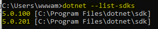
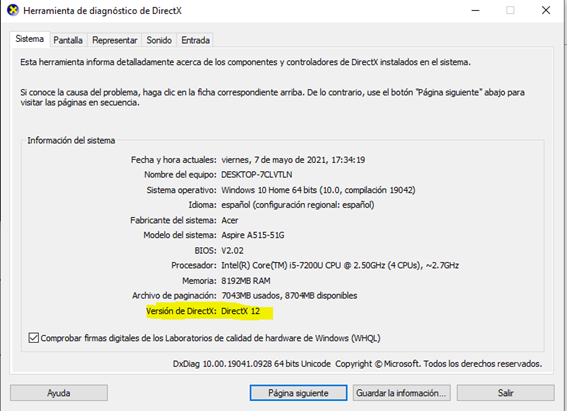
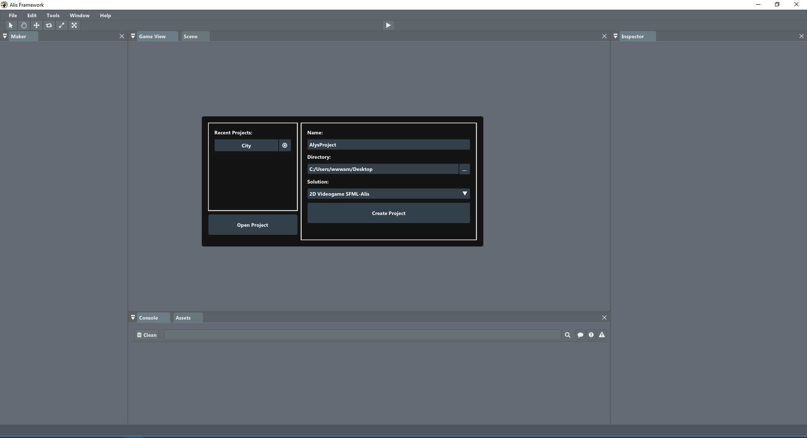

|
Alis Framework
1.3.6
Develop the video games of your dreams.
|


|
|
Alis Framework
1.3.6
Develop the video games of your dreams.
|
|
Antes de empezar con la instalación Alis, se debe de confirmar que tiene instalado en su ordenador una versión igual o superior a .NET CORE 5.0.
Una vez abierta la terminal o consola de comandos, se deberá introducir el siguiente comando:
``` {.java language="Java" frame="trBL" caption="Comando dotnet para visualizar los sdks instalados."} dotnet –list-sdks ```
En caso de que tengas .NET Core instalado, debería de aparecer esto:
{fig:logos width="50%"}
En caso de tener una versión inferior de .NET CORE 5.0, de aparecer un mensaje de error indicando que "no se reconoce el comando" o aparecer otro tipo de error, se deberá de instalar la versión más reciente posible.
Para facilitar el proceso de instalación se ha preparado la siguiente tabla. Donde se incluye un botón de descarga directa del instalador necesario para continuar el proceso.
::: {.center} ::: {.tabular} | c | c | |c| Descarga la última versión de .NET CORE 5 \
Versión 5.0.2 & Descargar\
Windows &
\ MacOS &
\ Linux(Debian) &
\ ::: :::
Llegados a este punto, ya tendríamos instalado y configurado .Net Core 5.
Para la correcta instalación del Editor es indispensable tener instalado y configurado .Net Core 5. Además, el proceso de instalación del Editor puede variar dependiendo del sistema operativo donde nos encontremos (Windows, MacOS, Linux).
Si desea trabajar con el sistema operativo Windows, se recomiendo utilizar la versión de Windows 10 en adelante. Además, es necesario tener actualizado el equipo, y disponer de las últimas versiones de los drivers de su tarjeta gráfica instalados.
Una vez abierta la consola deberemos de lanzar el siguiente comando:
``` {.java language="Java" frame="trBL" caption="Comando para abrir la herramienta de diagnóstico de DirectX"} dxdiag ```
Si todo marcha correctamente deberá de salir una ventana indicando la versión DirectX que tenemos actualmente instalada.
{width="70%"}
El siguiente paso en la instalación del Editor, será descargar la última versión disponible. Se ha preparado el siguiente botón para facilitar la descarga:
(*) Existe la posibilidad que su navegador, active un bloqueo durante la descarga. Esto es algo normal, solo debe de hacer click en 'continuar' y el proceso continuará con normalidad.
Llegado a este punto, debe existir una carpeta llamada 'Alis Editor Windows'. Una vez dentro, de dicha carpeta, debe de aparecer un archivo llamado 'Alis.exe'. Al hacer doble click sobre dicho archivo se debería de abrir el Editor de Alis mostrando lo siguiente:
{width="90%"}
En caso de utilizar un equipo con MacOS, se recomienda tener las últimas actualizaciones del sistema instaladas, tener instalado XCODE y activar la opción 'confiar en desarrolladores o aplicaciones de terceros' en su panel de 'seguridad y privacidad'.
Por otra parte, para facilitar la instalación del entorno de trabajo se utilizará un gestor de paquetes denominado 'brew'. Para instalar este gestor de paquetes se debe lanzar el siguiente comando en una terminal:
``‘ {frame="trBL" caption="Comando para instalar 'brew’"} /bin/bash -c '$(curl -fsSL https://raw.githubusercontent.com/Homebrew/install/HEAD/install.sh)' ```
Cuando finalice el proceso de instalación se podría probar que se ha instalado correctamente ejecutando:
``‘ {.java language="Java" frame="trBL" caption="Comando para verificar la correcta instalación de 'brew’"} brew doctor ```
Si todo se ha configurado correctamente, se deberá de instalar los siguientes paquetes:
``` {.java language="Java" frame="trBL" caption="Comando para instalar SFML Y CSFML"} brew csfml brew sfml ```
Una vez finalice el proceso de descarga, debería de aparecer una carpeta que dice 'Alis Editor Mac'. Se recomienda moverla al escritorio, pulsar el botón derecho del ratón, seleccionar la opción 'abrir terminal en carpeta' y ejecutar el siguiente comando:
``` {.java language="Java" frame="trBL" caption="Comando para ejecutar Alis Editor en MacOS"} ./Alis ```
 {width="90%"}
{width="90%"}
En caso de querer trabajar en una plataforma Linux, se recomienda trabajar con una distribución basada en Debian. Además se puede dar el caso de que la instalación se convierta en un verdadero desafío, es por ello por lo que se recomienda descargar la siguiente script de instalación.
Para ejecutar el instalador y empezar el proceso de configuración, se debe de abrir una terminal y lanzar los siguientes comandos:
``` {.java language="Java" frame="trBL" caption="Comandos para ejecutar instalador de Alis Editor en Debian"} sudo chmod 777 ./Debian_Install_Environment.sh sudo ./Debian_Install_Environment.sh ```
Una vez finalice el proceso de instalación, se recomienda hacer la siguiente validación, lanzando en una terminal este comando:
``‘ {frame="trBL" caption="Comando para saber la versión de OpenGL instalada en su sistema"} glxinfo | grep 'OpenGL version’ ```
Si OpenGL está correctamente instalado, debería de mostrar en la consola una versión igual o superior a OpenGL 3.0+:
 {width="90%"}
{width="90%"}
Para finalizar, se debe de abrir una terminal en la carpeta recientemente descomprimida, y lanzar el siguiente comando:
``` {.java language="Java" frame="trBL" caption="Comando para ejecutar Alis Editor en Linux"} ./Alis ```
Si todo se ha configurado e instalado correctamente se verá lo siguiente:
 {width="90%"}
{width="90%"}
En caso de querer trabajar con Alis sin tener que utilizar el Editor, existe la posibilidad de añadir el core y/o tools a tu proyecto de visual studio.
Ejecutando el siguiente comando en una terminal dentro del directorio de trabajo. Se configuraría todo tu proyecto para poder acceder a la funcionalidad del núcleo.
Por otra parte, si solo deseas utilizar las herramientas que ofrece alis, tendrías que lanzar el siguiente comando:
También puedes descargar directamente el paquete aquí:
::: {.center} ::: {.tabular} | c | c | |c| Descarga los paquetes de Alis \
Paquete Nuget & Descargar\
Core &
\ Tools &
\ ::: :::
Si quieres confirmar que todo se ha instalado correctamente puedes lanzar los siguientes comandos en el directorio donde se encuentra tu proyecto:
En caso de estar todo correctamente instalado y configurado debería de aparecer esto:
 {width="90%"}
{width="90%"}